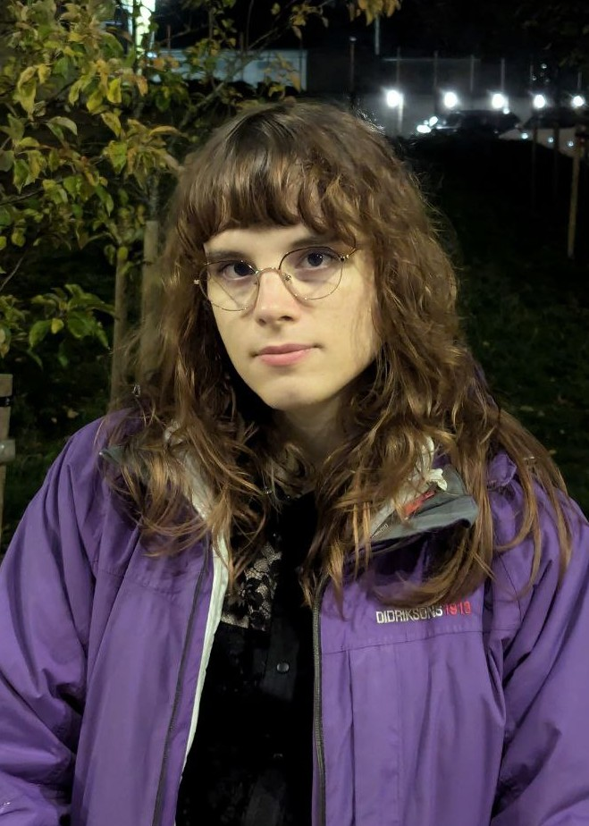

Clémence Chanavat

I am a 4th year PhD student at the TallCat lab in Tallinn, under Amar Hadzihasanovic. I am currently developing the theory of (∞, n)-categories in the context of diagrammatic sets. My main interests revolve around higher categorical structures, with an eye towards their applications in maths and computer science.
Contact details
clemence [dot] chanavat [at] gmail [dot] com